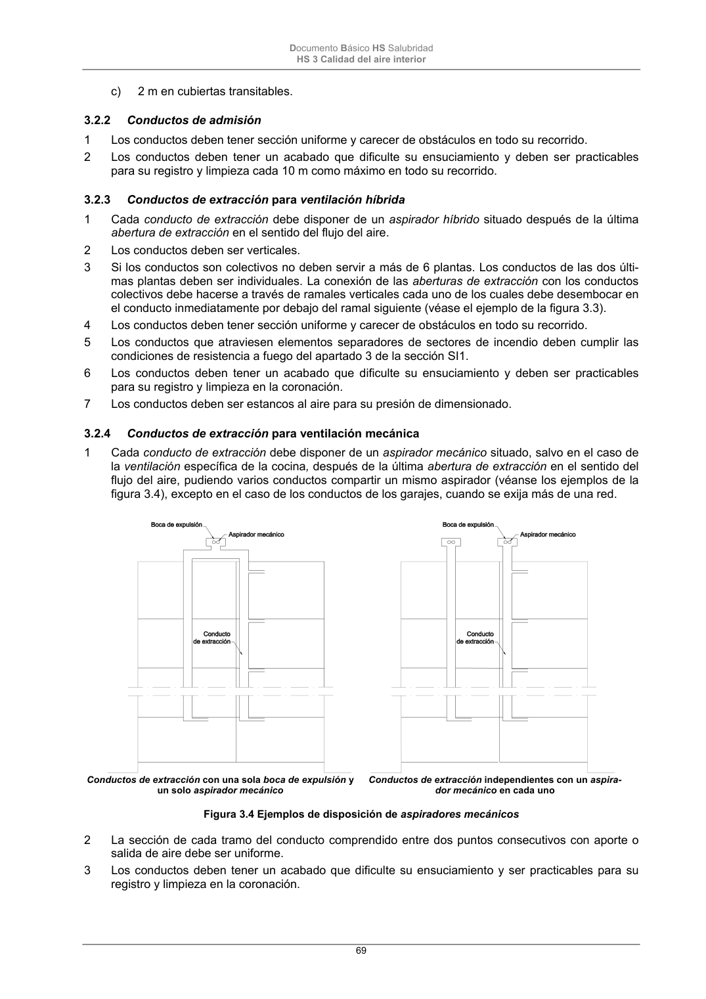

DB-HS Salubridad · edición 2022-06-14 · capa oficial
Documento DB-HS-oficial · SHA-256 del PDF 68df3caacc95f71aee2ec1ba7b2c65ae66155c21e3a8785521b8fdd4fd640d3b
Página física 69 de 184.
Copia fiel del PDF fuente · Fuente oficial
Ficha de la disposición en la fuente oficial
Formato: Texto de la página (Markdown)
Documento Básico HS Salubridad HS 3 Calidad del aire interior 69 c) 2 m en cubiertas transitables. 3.2.2 Conductos de admisión 1 Los conductos deben tener sección uniforme y carecer de obstáculos en todo su recorrido. 2 Los conductos deben tener un acabado que dificulte su ensuciamiento y deben ser practicables para su registro y limpieza cada 10 m como máximo en todo su recorrido. 3.2.3 Conductos de extracción para ventilación híbrida 1 Cada conducto de extracción debe disponer de un aspirador híbrido situado después de la última abertura de extracción en el sentido del flujo del aire. 2 Los conductos deben ser verticales. 3 Si los conductos son colectivos no deben servir a más de 6 plantas. Los conductos de las dos últi- mas plantas deben ser individuales. La conexión de las aberturas de extracción con los conductos colectivos debe hacerse a través de ramales verticales cada uno de los cuales debe desembocar en el conducto inmediatamente por debajo del ramal siguiente (véase el ejemplo de la figura 3.3). 4 Los conductos deben tener sección uniforme y carecer de obstáculos en todo su recorrido. 5 Los conductos que atraviesen elementos separadores de sectores de incendio deben cumplir las condiciones de resistencia a fuego del apartado 3 de la sección SI1. 6 Los conductos deben tener un acabado que dificulte su ensuciamiento y deben ser practicables para su registro y limpieza en la coronación. 7 Los conductos deben ser estancos al aire para su presión de dimensionado. 3.2.4 Conductos de extracción para ventilación mecánica 1 Cada conducto de extracción debe disponer de un aspirador mecánico situado, salvo en el caso de la ventilación específica de la cocina, después de la última abertura de extracción en el sentido del flujo del aire, pudiendo varios conductos compartir un mismo aspirador (véanse los ejemplos de la figura 3.4), excepto en el caso de los conductos de los garajes, cuando se exija más de una red. Conductos de extracción con una sola boca de expulsión y un solo aspirador mecánico Conductos de extracción independientes con un aspira- dor mecánico en cada uno Figura 3.4 Ejemplos de disposición de aspiradores mecánicos 2 La sección de cada tramo del conducto comprendido entre dos puntos consecutivos con aporte o salida de aire debe ser uniforme. 3 Los conductos deben tener un acabado que dificulte su ensuciamiento y ser practicables para su registro y limpieza en la coronación.
